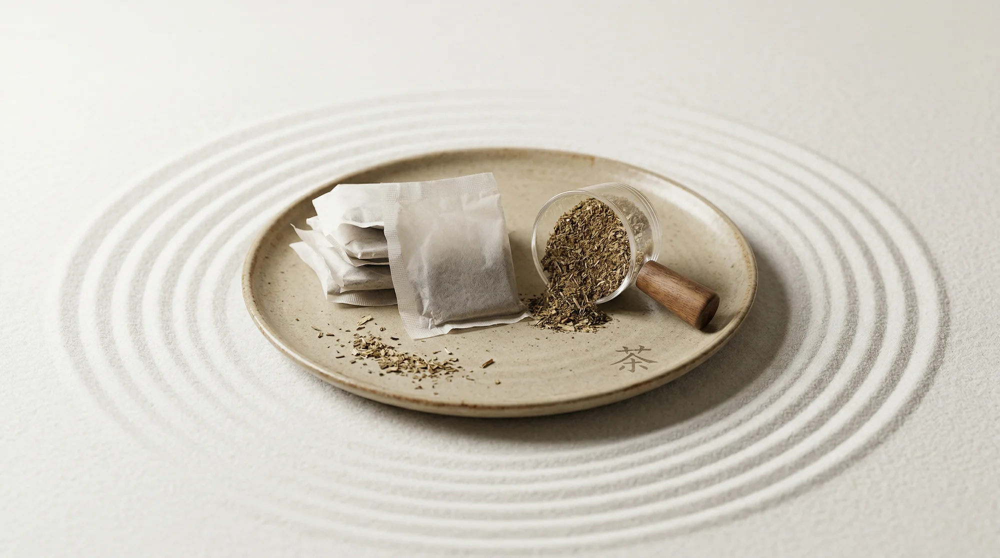
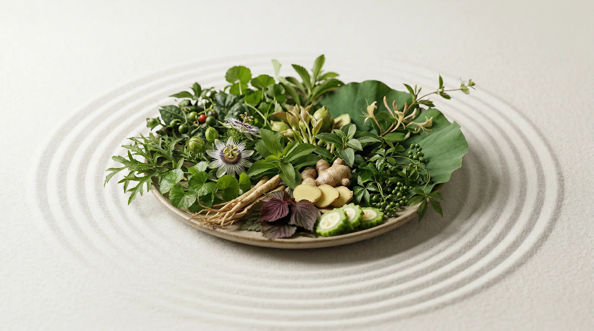

Thoughtful stories about Vietnamese herbs, daily rituals, and the gentle work of caring for your body.
Article 01 · Herbal wellness
Caring for your liver, one daily ritual at a time
A closer look at the six-herb Cà Gai Leo Rau Má blend and the everyday habits that support a lighter, more balanced feeling.
Did you know that every day, our liver silently performs over 500 different biological functions?
Likened to a miraculous “living filter,” the liver helps metabolize nutrients, neutralize toxins, and regulate the body. Yet, amidst the modern lifestyle filled with stress, pollution, and contaminated food, the liver has to endure being overloaded every single hour. Only when signals such as fatigue, internal heat, dull skin, or breakouts appear is that “hero” truly sending an urgent cry for help. Listening to that call, Cà Gai Leo - Rau Má Tea (CGLRM) was born as a natural purifying therapy, representing a delicate intersection between traditional medical heritage and modern science.
The Art of Blending: The Power from 6 Precious Herbs
Far beyond a mere refreshing beverage, this tea line is a comprehensive restorative herbal ecosystem featuring 6 precious, entirely natural ingredients.
Cà Gai Leo (Solanum procumbens) - “The Liver’s Bodyguard”: Contains the main active compound Glycoalkaloid, which plays an active role in protecting and rebuilding damaged cells. This herb helps prevent viral attacks, especially providing strong support in inhibiting the hepatitis B virus. In addition, Cà Gai Leo neutralizes free radicals to slow down the progression of cirrhosis and promotes rapid alcohol detoxification, helping minimize acute damage caused by beer and alcohol.
Rau Má (Gotu Kola / Centella asiatica) - “A Breath of Fresh Air”: Likened to a gentle “spa” therapy for the circulatory system and kidneys. Centella stimulates the elimination of toxins, excess salt, and fat through urination, while providing localized anti-inflammatory effects to protect liver tissue from free radicals. In particular, it helps enhance blood circulation, strengthen blood vessel walls, and deliver oxygen to nourish the body’s organs.
An Xoa (Helicteres hirsuta) - “The Cleaner”: Focuses its action on the intestinal tract and nervous system. With natural laxative effects, An Xoa sweeps away waste from the intestines to reduce the burden on the liver. This herb helps prevent the formation of fibrous tissue, supports individuals with hepatitis and cirrhosis, and has a mild sedative effect that promotes deep sleep - creating the golden window for the liver to repair itself.
Xạ Đen (Celastrus hindsii) - “The Cellular Shield”: Contains precious active compounds such as Polyphenols, Flavonoids, Quinones, and Saponins. Xạ Đen helps inhibit the growth of tumors, especially liver cancer, and clears free radicals from the environment and chemicals. It supports the recovery of liver function by lowering elevated liver enzymes, reducing inflammation, diminishing breakouts, and relieving nervous tension.
Kim Ngân Đằng (Honeysuckle Vine) - “The Solid Rear Guard”: Contains Flavonoids and Alkaloids with the ability to purify the skin and blood. This is a natural anti-inflammatory and antibacterial herb that helps quickly alleviate breakouts, rashes, and allergies caused by the accumulation of toxic heat in the body. Honeysuckle vine also has a mild diuretic effect to support kidney function.
Cỏ Ngọt (Stevia) - “The Balanced Sweetness”: Provides a natural 0-calorie sweetness, completely safe for individuals with high blood sugar levels. Stevia rounds out the tea’s flavor without placing a sugar metabolism burden on the liver, while supporting mild anti-inflammatory action and optimizing the body’s metabolic processes.
Six natural herbs, traditionally blended for a balanced daily cup.A warm tea ritual that fits naturally into the day.
The Daily Tea Ritual to Rejuvenate Vitality
Caring for your liver should be viewed as a daily ritual of self-love.
Dosage: 2–3 tea bags daily, brewed with 500ml of boiling water (90–100°C) and steeped for 5 minutes.
Golden Timing: Drink while the tea is still warm, 30 minutes after breakfast to wake up the liver, and take small sips intermittently throughout the day as a replacement for plain water.
When persistently maintaining this habit for about 2–3 months, the changes will come like “steady rain soaking deep” - from deep sleep to radiant, healthy skin and stabilized liver enzyme levels.
It is worth noting that during the first 1–3 weeks, phenomena such as mild drowsiness or frequent urination are positive signs indicating that the body is actively eliminating toxins.
However, due to its potent therapeutic properties, pregnant women, children under 8 years of age, or individuals with severe underlying cardiovascular or renal conditions should consult a specialist before use to ensure absolute safety.
A healthy liver comes not only from the cup of tea you drink, but also as a result of a green lifestyle: prioritizing clean, fresh food, sleeping before 11 PM, and keeping an optimistic spirit through gentle physical exercise. Remember, liver care is a persistent art, and the greatest reward is a light body, a rosy complexion, and a daily surge of vital energy.
Article 02 · TDG Tea guide
Decoding the purifying power of 6 natural herbs
Why a considered herbal ritual can be a gentle companion for modern lives shaped by late nights, stress, and irregular meals.
In the midst of modern life - where staying up late, irregular eating habits, work stress, alcohol consumption, and greasy foods gradually become familiar parts of daily living - the liver is often the organ that silently endures the most. For this reason, more and more people are turning to gentle, sustainable, and nature-aligned self-care solutions.
Why Does the Liver Need Early Attention?
The liver is often likened to the body’s “living filter,” serving crucial roles such as:
Metabolism: Converting food into essential energy and nutrients.
Toxin Purification: Neutralizing and eliminating toxins, cleansing the bloodstream.
Digestive Support: Producing bile to break down fats.
Vitamin & Mineral Storage: Storing fats, vitamins, and minerals.
The liver must work continuously every day to maintain bodily balance, performing over 500 biological functions daily to sustain vitality, radiant skin, and mental clarity.
However, the modern pace of life makes this “filtration plant” far more susceptible to overload. Common contributing factors include:
Alcohol consumption
Consuming fried and fast foods
Prolonged stress
Lack of sleep
Working in environments with toxic elements
When the body lacks the conditions to balance itself, common signs may appear - such as internal heat, prolonged fatigue, breakouts, dull skin, itchiness, poor appetite, or general discomfort. This is why many choose to integrate gentle herbal drinks into their daily routine to support the body’s well-being right from the root.
6 Healing Herbs - 1 Restorative Journey
Trà Cà Gai Leo Rau Má TDG Tea is an herbal tea developed to support body purification, nurture liver health, and accompany those regularly exposed to factors causing internal heat, fatigue, and metabolic stress. With core benefits centered on cooling, nourishing, and strengthening the liver, this product serves as a solution to purify the body, support liver health improvement, and promote a lighter physical state.
Instead of waiting for illness to speak up, the combination of 6 medicinal components creates a gentle herbal cup suitable for daily use - ideal for those looking to begin a green living habit and care for their inner health rather than merely treating superficial symptoms. Each ingredient fulfills a distinct role while complementing the others to form a balanced whole. This formula is positioned as “6 Healing Herbs - 1 Restorative Journey.”
Cà gai leo - The Loyal Bodyguard: The most prominent component in the formula. Cà gai leo is highlighted for its protective and restorative properties, helping neutralize free radicals and support liver care. This is also why the product is named Cà Gai Leo Rau Má.
Rau má - A Spa for the Body: A familiar herb to Vietnamese people, commonly associated with cooling properties. Rau má takes on the role of clearing heat, soothing internal heat sensations, and fostering a feeling of bodily lightness.
An xoa - The Diligent Cleaner: Acts as a supportive ingredient for elimination and regeneration while contributing to metabolic balance.
Xạ đen - The Anti-Inflammatory Shield: Incorporated for its anti-inflammatory and antioxidant support, adding an extra layer of defense when the body experiences fatigue, internal heat, or lifestyle-induced stress.
Kim ngân đằng - The Detox Rear Guard: Described as an ingredient supporting detoxification, antibacterial defense, and sharing the filtration burden, making the formula comprehensive in its purifying action.
Cỏ ngọt - Wholesome Natural Sweetness: Provides a subtle, natural sweet taste, making the tea enjoyable while preserving its authentic herbal essence. With zero calories, it enhances the drinking experience without compromising its inherent lightness.

TDG’s herbal tea ritual, grounded in Vietnamese ingredients.

The six ingredients work together as a considered blend.
Anatomizing the Key Functions of Trà Cà Gai Leo Rau Má TDG Tea
Supports Body Purification: Targeted at individuals seeking to help their body eliminate toxins and reduce the heaviness caused by an irregular lifestyle. This is a core functional focus highlighted in the product documentation.
Supports Liver Health Care: The core strength lies in focusing on herbs traditionally associated with the liver in folk and traditional medicine. Formulated for those seeking gentle improvement and strengthening of liver health.
Supports Cooling and Relieving Internal Heat: People who frequently eat spicy or greasy foods, stay up late, or experience bodily stuffiness and discomfort often seek refreshing drinks. Rau má, kim ngân đằng, and the companion herbs help deliver this soothing relief.
Supports Radiant Skin and a Lighter Physical State: When internal health is better cared for, many notice clearer improvements in energy levels, skin condition, and daily well-being. Symptoms like dull skin, breakouts, itching, or lingering fatigue signal the need for better liver care and purification.
Supports Frequent Consumers of Alcohol and Oily Foods: For this group, maintaining a suitable herbal tea habit acts as a companion to support the body against the strains of modern life.
Note: This product is a health-supportive herbal tea. It is not a medicine and does not replace medical treatment.
Who Is This Tea Suitable For?
This product suits various groups looking for natural self-care solutions:
Individuals needing liver care: Those facing liver-related concerns or needing liver protection support, such as elevated liver enzymes, fatty liver, poor liver function, or those wanting to support liver cell recovery.
Individuals prone to internal heat, breakouts, and rashes: Suitable for anyone dealing with internal heat, pimples, hives, itching, rough skin, or bodily discomfort following periods of irregular eating.
Frequent consumers of alcohol and greasy foods: Recommended for those frequently consuming alcohol, fried foods, fast foods, or unhealthy diets.
People with high-stress jobs who stay up late: Late nights and chronic stress silently burden the liver. For busy, overworked individuals, herbal tea offers a calming ritual to help slow down.
Middle-aged adults and those seeking long-term wellness: As bodily functions change with age, many prioritize gentle, non-complex, and easy-to-maintain daily habits.
Daily Tea Ritual
Brew 1 tea bag with roughly 500ml of boiling water (90–100°C) and steep for about 5 minutes.
Use 2–3 tea bags daily.
For a milder, lighter infusion, brew 2–3 tea bags in a 1-liter bottle to sip intermittently throughout the day.
Optimal timing: Morning (about 30 minutes after breakfast) or during the day as small warm sips. Avoid drinking close to bedtime to prevent nighttime urination.
This versatility makes the product suitable whether you prefer a formal seated tea session or taking a thermos to the office.
From ingredient selection to a steady daily ritual.
How Long Until Effects Are Felt?
A realistic aspect of this product is its approach to how the body adapts to herbs over 3 stages:
Phase 1 (Weeks 1–3): The body gets accustomed to the herbal tea. Some may notice easier bowel movements, slightly loose stools, or mild drowsiness. These are positive indicators that the body has started cleansing toxins.
Phase 2 (After 2–3 months): Positive shifts become more apparent, such as reduced fatigue, deeper sleep, and fresher-looking skin. This is the “marked improvement” phase.
Phase 3 (Consistent Use): The goal shifts to maintaining stable liver function and establishing long-term natural balance.
This highlights that herbal tea is not an “instant fix,” but a journey suited for those who are consistent and value health care as an ongoing process.
Safety Boundaries - Who Should Exercise Caution?
Groups requiring caution: The following groups should avoid use or consult a professional prior to drinking:
Pregnant and breastfeeding women
Children under 8 years old
People with low blood pressure or cardiovascular conditions
People with kidney failure or weak kidney function
Those undergoing specific medical treatments for severe conditions (must consult a doctor beforehand)
Golden Rules to Remember
Listen to your body’s reactions during the first week of use.
Store sealed in a cool, dry place away from humidity and mold.
Do not abuse alcohol and rely solely on tea for protection.
Do not combine arbitrarily with Western medications; space intake a few hours apart and consult a physician when necessary.
Healthy Lifestyle Tips - The Golden Key for Your Liver
Liver care should not rely solely on a single product. For optimal results, combine it with a balanced lifestyle:
Eat lighter, prioritizing green vegetables, whole grains, and lean proteins.
Limit deep-fried foods, sweets, and overly salty items.
Stay well-hydrated throughout the day.
Sleep earlier, aiming to be asleep before 11 PM.
Reduce stress through walking, yoga, deep breathing, or light meditation.
Undergo routine health check-ups when needed.
Herbal tea is an integral part of a better living journey, not a substitute for a healthy daily lifestyle.
Why Choose Products from TDG Tea?
TDG Tea pursues the brand positioning of pure tea and limitless connection, honoring authenticity, originality, emotion, and user experience. Within our herbal tea line, each product harmonizes traditional medical theory with modern research, utilizing standardized ingredients thoughtfully formulated for distinct wellness needs.
This provides peace of mind for daily consumption, especially for those looking to replace sugary soft drinks or overly strong coffee.
A Cup of Tea - An Act of Self-Love
Trà Cà Gai Leo Rau Má TDG Tea is an ideal choice for anyone wishing to cultivate a gentler self-care habit - especially if you regularly face internal heat, late nights, irregular meals, or wish to prioritize liver health early on. With its 6-herb formula including cà gai leo, rau má, an xoa, kim ngân đằng, xạ đen, and cỏ ngọt, the product offers a light, accessible, and sustainable solution tailored for modern life.
A daily cup of tea may not create immediate, dramatic changes, but it is a gentle way to care for yourself starting from the smallest daily habits.